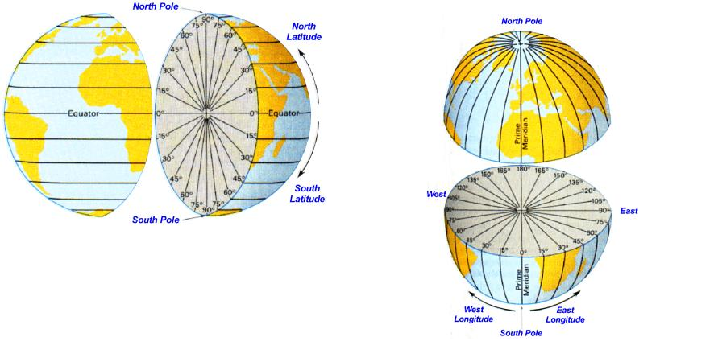
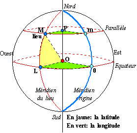
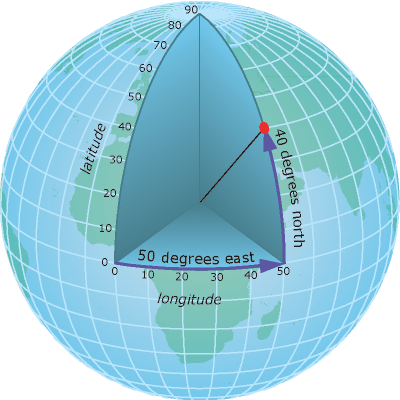

Pour visionner la vidéo ci-contre, cliquer dessus.  Compléments d'explications : Pour se repérer sur le globe terrestre, on utilise des parallèles et des méridiens. Le paralllèle de référence est l'équateur. Le méridien de référence est le méridien de Greenwich qui passe par la ville de Greenwich en Angleterre.  Pour repérer un point M sur le globe terrestre, on utilise deux angles : - La latitude qui représente l'angle vertical entre l'équateur et le parallèle correspondant au point M. On peut partir de l'équateur en se déplaçant vers le Nord ou vers le Sud. La latitude s'exprime donc à l'aide d'une mesure en degré et d'une information sur l'orientation de cet angle : Nord ou Sud. Exemple: 30°N ou 30°S  - La longitude qui représente l'angle horizontal entre le méridien de Greenwich et le méridien correspondant au point M. On peut partir du méridien de référence en se déplaçant vers l'Est ou vers l'Ouest. La longitude s'exprime donc à l'aide d'une mesure en degré et d'une information sur l'orientation de cet angle : Est ou Ouest. Exemple: 15°E ou 15°O